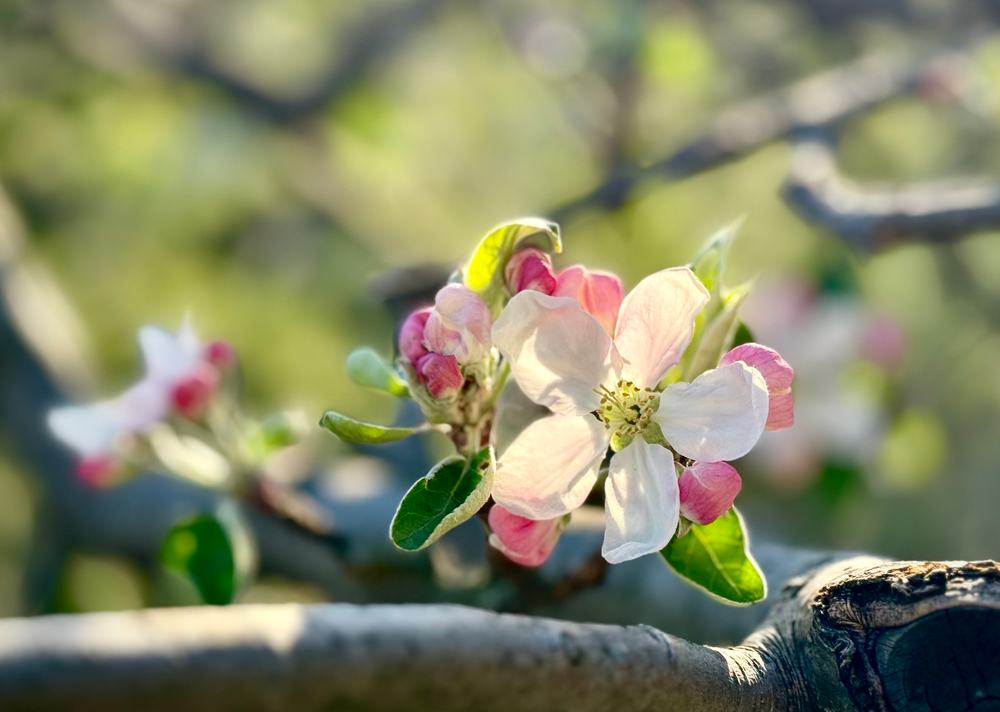
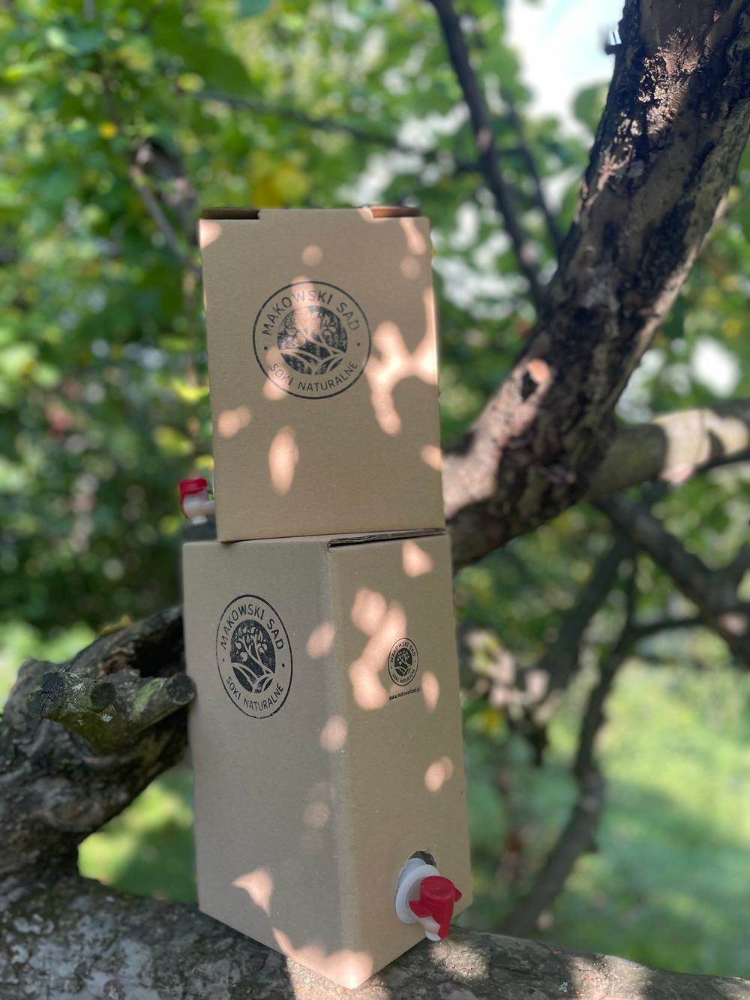
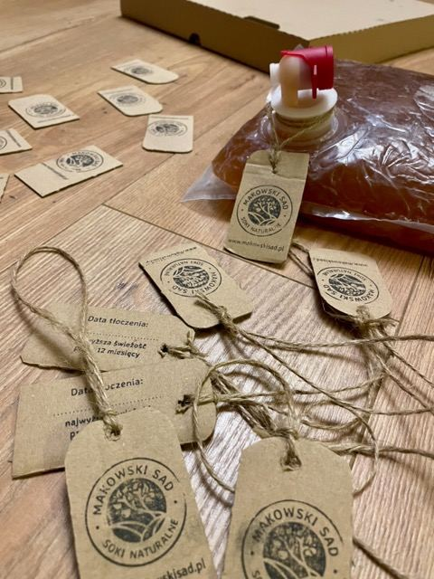
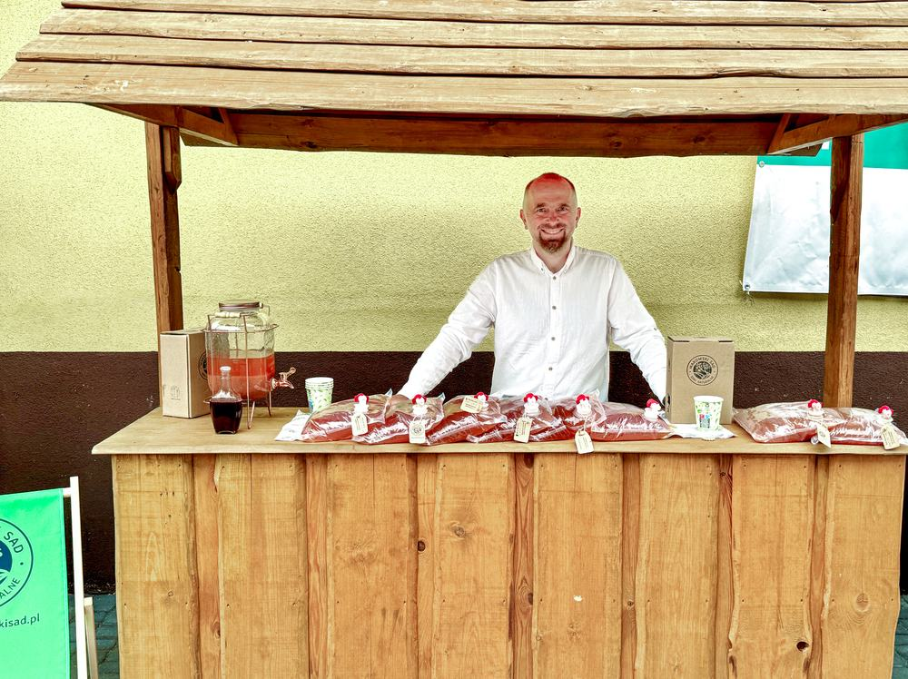

Opowieść w siedmiu rozdziałach
Baśń o Makowskim Sadzie

Odkryj wyjątkowe walory tłoczonych soków jabłkowych z ekologicznego sadu w Małopolsce.
Przewróć stronęProlog Dom w sadzie
Dawno, dawno temu… a właściwie dziś, w Makowie Podhalańskim.

Tradycja i pasja
Jesteśmy niewielkim, rodzinnym przedsięwzięciem z urokliwego Makowa Podhalańskiego. Zajmujemy się tworzeniem naturalnych soków jabłkowych, z pasją oraz troską o środowisko.
Z dala od ruchliwych dróg w sadzie znajduje się nasz dom.


Rozdział pierwszy Kwiat
Gdy zakwitną jabłonie

Nasze kilkudziesięcioletnie jabłonie rosną w naturalny sposób bez przyspieszaczy wzrostu i są organicznie odporne.
Mieszkając pośród drzew, nie chcemy obcować ze środkami chemicznymi służącymi do usprawniania uprawy – stosujemy permakulturę.
Jabłonie przycinamy jesienią, usuwamy pasożyty, wszystko ręcznie.



Rozdział drugi Jabłko
Gdzie każdy ma swoją rolę

Nasz sad to mikroekosystem, gdzie każde drzewo i owad ma swoją rolę. Nie chcemy tego zaburzać, stosując „chemię”.
Nie stosujemy oprysków, środków ochronnych ani sztucznych nawozów.


Mile widziani goście
Dbamy o różnorodność sadu, tworząc środowisko, w którym różni goście są mile widziani.
-

Jaszczurka -

Pisklęta -

Pisklę muchołówki szarej


Rozdział trzeci Zbiór
Tylko najlepsze

Starannie zbieramy i selekcjonujemy jabłka, tylko najlepsze trafiają do naszych soków.


Rozdział czwarty Transport
Droga do Choczni

Wyselekcjonowane jabłka transportujemy do „Tłoczni Choczni” pod Wadowicami.
Współpracujemy z lokalnymi biznesami

Leśnicy i myśliwi
Nasze jabłka też idealnie nadają się do karmienia zwierząt leśnych. Dzikie zwierzątka zostają w lesie i nie wchodzą w szkodę :)
Pozostałe odpady oddajemy do lokalnego Punktu Selektywnej Zbiórki Odpadów Komunalnych.
Rozdział piąty Tłoczenie
Jak jabłko staje się sokiem

Tłocznia Chocznia to profesjonalna tłocznia, wyposażona w nowoczesne urządzenia, które zapewniają precyzję, skuteczność procesu tłoczenia i dbałość o środowisko naturalne.
Cały proces jest zoptymalizowany przez tłocznię.
- 100% naturalne składniki
- Bez dodatku cukru i konserwantów
Rozdział szósty Pakowanie
Worek, karton i sznurek

Soki są dystrybuowane w workach PET z kranikiem. Opcjonalnie soki są dodatkowo opakowane w prosty karton, umożliwiający łatwe nalewanie oraz zabezpieczający bukłak przed przypadkowym uszkodzeniem.
Soki jabłkowe
W pudełku lub same worki 3 l.
- Przydatność do spożycia przez co najmniej 5 dni po otwarciu
- Mniej materiałów na opakowanie
- Łatwe przechowywanie i nalewanie
Etykiety robimy własnoręcznie, wycinając z kartonów po pizzy lub zużytych pudeł. Przywiązujemy je najprostszym sznurkiem.
Wszystkie napisy i logo są umieszczane poprzez ostemplowanie – w ten sposób nie tworzymy dodatkowych etykiet, nie używamy naklejek. W ten sposób kartony mogą być wielokrotnie używane – wystarczy uzupełniać „wkład”, do czego gorąco zachęcamy.





Jak segregować
-
Etykietki można utylizować jako papier, podobnie jak samo pudełko, jak się już zużyje.
-
Worek PET, po całkowitym opróżnieniu, można wyrzucić do plastików.
-
Zalecamy odciąć wcześniej kranik – umożliwia to wykorzystanie całości soku i ułatwia sortowanie.
Rozdział siódmy Sprzedaż
Na straganie

Produkujemy rocznie około 300 litrów wysokiej jakości soków jabłkowych.
Chętnie obsługujemy imprezy lokalne.



Gdzie nas znaleźć
Makowski Sad
ul. Sosnowa 7
34-220 Maków Podhalański